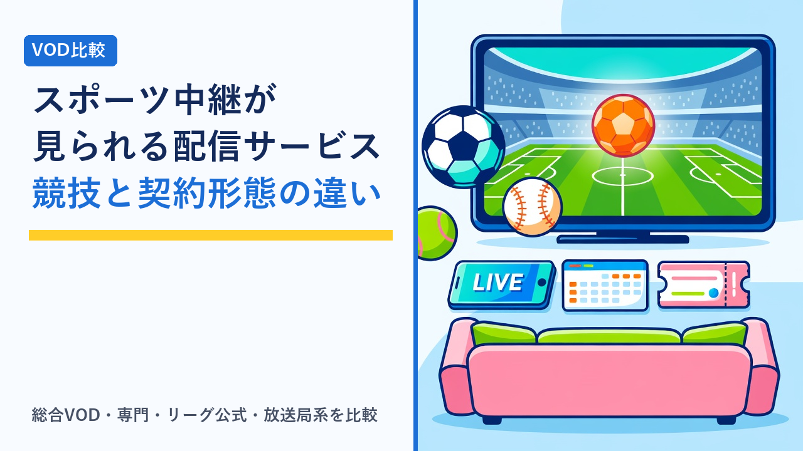

スポーツ中継が見られるVOD・配信サービスの比較：見られる競技と契約形態の違い
2026-09-07 更新

スポーツ中継をネットで見たいと思って調べると、「総合的なVOD」「スポーツ専門の配信」「リーグやチームの公式配信」「放送局の見逃し配信」と、種類の違うサービスが横並びで出てきます。映画やドラマの見放題と違い、スポーツ配信は「どの競技・大会が、どのサービスで、いつまで見られるか」が放映権によって決まるため、料金表だけを比べても答えが出ません。この記事では、スポーツ中継が見られる配信サービスを4つのタイプに分け、契約形態の違いと、契約前に確認したい比較軸を客観的に整理します。
スポーツ中継が見られる配信サービスは4タイプ
サービス名はさまざまですが、スポーツ中継を扱う配信サービスは、扱う範囲と設計の違いからおおむね次の4つに分けられます。
① 総合VOD（スポーツも扱う）
映画・ドラマ・アニメ・バラエティなどの見放題を主軸にしつつ、特定の競技や大会を配信するタイプ。スポーツだけを目的にすると割高に感じる一方、他のジャンルも見る人にはまとめて1契約で済ませられます。
② スポーツ専門の配信サービス
複数の競技・リーグを幅広く扱うことを主軸にしたタイプ。国内外の試合数の多さが特徴ですが、月額はほかのタイプより高めになりやすく、年間契約の割引が用意されているのが一般的です。
③ リーグ・競技団体の公式配信
特定のリーグや大会が自ら運営、または特定の配信先を指定して提供するタイプ。その競技については全試合・全カードに近い網羅性を持つ一方、ほかの競技は見られません。
④ 放送局系（有料放送・見逃し配信）
テレビ局や有料放送チャンネルが運営し、放送した中継のライブ配信や見逃し配信を提供するタイプ。放送スケジュールにひもづいた編成が特徴で、大型の国際大会や特定競技に強みを持つことがあります。
ポイントは、同じ競技でも大会ごとに権利の持ち主が違うことです。たとえば国内リーグは③や④、海外リーグは②、国際大会は④や①といった形で分かれることがあり、「この競技を見たい」だけでは1つに絞れません。見たい大会の名前まで具体化してから、どのタイプに含まれているかを確認するのが出発点になります。
契約形態の違いを比較する
料金の払い方もサービスによって異なります。見る頻度やシーズンの長さによって、どの形態が合うかは変わります。
| 契約形態 | 仕組み | 向いている見方 | 注意点 |
|---|---|---|---|
| 月額（見放題） | 毎月定額で対象の中継を視聴できる | シーズン中だけ契約し、オフシーズンは解約する | 解約忘れで見ない月も課金される。月の途中に解約しても日割りにならないことが多い |
| 年額（一括前払い） | 1年分をまとめて払い、月額換算で割安になる | 年間を通じて複数の競技を見る | 途中で放映権が移っても原則返金されない。翌年の自動更新の有無を確認 |
| 都度課金（PPV・1試合単位） | 試合や大会ごとに料金を払う | 特定の一戦や決勝だけを見たい | 1回あたりの単価は高め。視聴期限や再視聴の可否は大会ごとに違う |
| 無料配信（広告付き） | 登録不要または無料登録で一部の試合を配信 | まず配信の使い勝手を試したい | 対象試合が限られる。画質や同時視聴などが有料プランと異なることがある |
| 通信キャリア・他サービスとのセット | 携帯料金や別サービスと組み合わせて割引 | すでにそのキャリアや別サービスを使っている | セット側を解約すると割引が消える。条件が変更される場合がある |
上の表は一般的な契約形態を整理したものです。プランの構成、料金、解約や返金の条件はサービスごとに異なり、変更されることがあります。具体的な内容は必ず各公式サイトの最新情報をご確認ください。
スポーツ配信で特徴的なのは、「シーズン」という区切りがあることです。映画やドラマの見放題はいつ契約しても内容が大きく変わりませんが、スポーツはオフシーズンに入ると見るものがなくなる競技が多くあります。年額は月額より安く見えても、年間を通じて見る競技がなければ月額でシーズン中だけ契約するほうが安く済むこともあり、逆に複数の競技を追うなら年額のほうが有利になります。無料期間や解約タイミングの管理は、VODサービスの解約忘れを防ぐコツと注意点まとめで整理しています。
競技ジャンル別に見る「どこで配信されやすいか」
放映権は年ごとに動くため、特定のサービス名と競技の対応を固定的に語ることはできません。ただし、競技の性質によって配信の形には傾向があります。目当ての競技がどのタイプに近いかを把握しておくと、探す先を絞りやすくなります。
| 競技の性質 | 配信の傾向 | 確認したいこと |
|---|---|---|
| 試合数の多い国内リーグ戦（野球・サッカー・バスケットボールなど） | リーグ公式配信や専門サービスが全試合を扱い、放送局系や総合VODは一部の試合を扱うことが多い | 「全試合」か「一部の試合」か。自分の応援するチームの試合が対象か |
| 海外リーグ戦 | 専門サービスや総合VODが国内向けに配信する形が中心。時差により深夜・早朝の試合が多い | 見逃し配信の有無と期間。日本語解説の有無 |
| 国際大会・世界大会（数年に一度の大会を含む） | 放送局系が中心になりやすく、一部が無料で見られる場合もある。大会ごとに配信先が変わりやすい | 大会単位で毎回確認する。全試合か注目カードのみか |
| 格闘技・ボクシングなど興行型 | 1大会ごとの都度課金（PPV）や、総合VODでの独占配信が多い | 単価と視聴期限。再視聴の可否 |
| モータースポーツ・テニス・ゴルフなど巡業型 | 専門サービスが年間を通じて扱うことが多く、放送局系が一部大会を配信する | 年間全戦か特定の大会のみか。予選や練習走行まで見られるか |
「一部の試合」と「全試合」の違いは、実際に契約してから気づきやすいポイントです。応援しているチームの試合が毎回含まれるとは限らないため、配信予定表で数週分を確認しておくと判断しやすくなります。放送局系サービスの編成型という考え方については、WOWOWオンデマンドはどんな人におすすめ？他のVODとの違いまとめでも触れています。
ライブ配信ならではの確認ポイント
スポーツ中継は「その時間に見る」ことが前提になるため、映画やドラマの視聴では気にならなかった点が使い勝手に直結します。
- ライブと見逃し配信の扱い：試合後にいつから、いつまで見返せるかはサービスと大会によって違います。ハイライトだけが残る場合もあります。
- 配信の遅延：ネット配信はテレビ放送より数十秒〜数分遅れて届くのが一般的です。SNSで結果を先に知ってしまうことがあるため、気になる人は通知を切るなどの工夫が必要になります。
- 同時視聴と端末登録：家族が別々の試合を同時に見る場合、同時視聴の上限数が問題になります。詳しくは動画配信サービスの家族アカウント・同時視聴ルールまとめをご覧ください。
- テレビでの視聴方法：対応テレビやストリーミング端末の一覧はサービスごとに違い、手元の機器が対応外のこともあります。
- 通信量と回線の安定性：ライブ中継は長時間の高画質配信になりやすく、スマートフォンの回線で見るとデータ量が大きくなります。画質の設定についてはVODサービスの画質・ダウンロード機能を比較、オフライン視聴に強いのはどれで整理しています。外出先の公衆Wi-Fiで見る場合は公衆Wi-Fiは安全？カフェ・ホテルで動画を見る前に知っておきたい通信の話も参考にしてください。
- マルチアングルや副音声などの機能：複数カメラの切り替え、現地音声のみの音声、スタッツ表示などはサービスや大会によって提供状況が違います。
選び方のポイント
- 「競技名」ではなく「大会名」まで具体化する：同じ競技でもリーグ戦・カップ戦・国際大会で配信先が違います。見たい大会を3つほど書き出してから、それぞれの配信予定を公式サイトで確認します。
- シーズンの長さで月額か年額かを決める：1つの競技をシーズン中だけ見るなら月額、年間を通じて複数の競技を追うなら年額が目安です。年額の前払いは放映権の移動リスクも含めて判断します。
- スポーツ以外も見るなら総合VODも候補に入れる：映画やドラマもあわせて見る人は、スポーツ専門サービスより総合VODのほうが1契約で済み、合計額が抑えられることがあります。各社の料金や無料期間は動画配信サービスの無料体験まとめ比較で横並びにしています。
- 見逃し配信の期間を料金より先に見る：深夜・早朝の試合が多い海外リーグや、平日昼の試合が多い競技では、ライブで見られる回数のほうが少ないこともあります。
- 無料配信やお試し期間で「見られる環境か」を確認する：テレビでの再生、回線の安定性、アプリの使い勝手は契約前に試せることがあります。一部試合が無料で公開されている場合は、まずそこで確認するのが確実です。
- 解約手順と自動更新を契約前に把握する：シーズン終了後に解約する運用を考えているなら、解約がアプリ内で完結するか、年額の自動更新が初期設定でオンかを先に確認しておきます。
よくある質問
去年見られた大会が、今年は同じサービスで配信されないことはありますか？
あります。スポーツ中継の配信は放映権の契約にもとづいて行われており、契約期間はシーズン単位や数年単位で区切られています。契約が更新されなければ、翌シーズンから別のサービスに移ることや、国内では配信されなくなることも起こり得ます。同じ競技でも、リーグ戦と国際大会、国内大会と海外大会で権利の持ち主が違うのも一般的です。特定の大会を目当てに契約するなら、シーズン開幕前に公式サイトの配信予定を確認し、年額プランで前払いする場合は特に慎重に判断するのが安全です。
ライブで見られない場合、あとから試合を見返すことはできますか？
多くのサービスにライブ配信のあとに「見逃し配信」や「アーカイブ」を用意する仕組みがありますが、その期間と対象はサービスや大会によって異なります。試合終了後すぐに見られるもの、数日〜数週間で公開が終わるもの、ハイライトだけが残るものなどさまざまです。放映権の条件で見逃し配信そのものが認められていない大会もあります。リアルタイムで見られない時間帯の試合が多い競技を追うなら、見逃し配信の有無と期間を、料金より先に確認しておくことをおすすめします。
スポーツ配信をテレビの大画面で見るにはどうすればいいですか？
主な方法は、テレビ本体に配信サービスのアプリが入っている（対応テレビ）、ストリーミング端末やゲーム機をテレビにつないでアプリを使う、スマートフォンやPCの画面をテレビに映す、の3つです。ただしサービスごとに対応する端末やテレビのメーカー・年式が異なり、対応外の組み合わせでは再生できないことがあります。また、ライブ中継は通信量が大きく、無線接続だと映像が途切れる場合もあるため、安定して見たいなら有線接続や回線速度も確認しておくと安心です。契約前に公式サイトの対応端末一覧で、手元の機器が含まれているかを見ておくのが確実です。